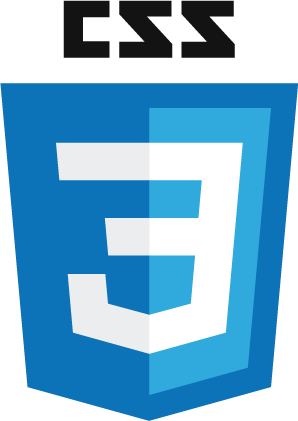

Web Developer
Web Developer
Musician
Writer
- Beginner web developer focusing on HTML, CSS and Javascript
- Aiming to build simple, functional, responsive websites and web apps
- Working towards clean, effective UX/UI design
See some things I've made here.
Skills (I'm working on...)
- 

Musician
- 12 years playing experience
- First Instruments: Electric & Acoustic Guitar
- Second Instruments: Vocals, Bass Guitar
- Played in Stars & Flights for 5 years
- Session guitarist in The Bruno Mars Experience and pit orchestras around South Wales
- Private guitar teacher: Get in touch
Writer
- Amateur music journalist
- Live & Album Reviews
- Pop, Indie, Rock, Metal
- Subba-Cultcha.com
©2016 James Davies
Sitemap